En aquest capítol estudiarem més a fons el format dels formularis, això com els diferents controls que l'Open Base disposa per dissenyar un formulari. Fins ara només hem vist formularis senzill constituïts per etiquetes de text i quadres de text. Les etiquetes de text es fan servir per mostrar informació textual a l'usuari.
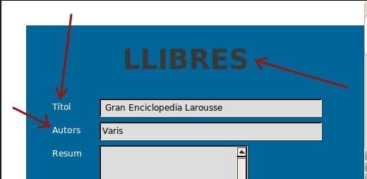
Els quadres de text són controls de formulari que permeten a l'usuari introduir dades per mitjà del teclat.
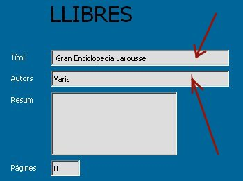
Els formularis tenen, però, altres controls que cal conèixer per aconseguir facilitar la introducció de dades a l'usuari. Si l'usuari només pogués introduir dades escrivint des de teclat, trigaria molt de temps en omplir un formulari i segurament, el nombre d'errades comeses seria considerable.
Sortosament disposem de controls que ens permeten seleccionar dades sense haver d'escriure-les augmentant així la rapidesa en la introducció de dades i la fiabilitat de les dades entrades. Per treballar amb aquests controls avançats obrirem el formulari en mode d'edició, o en cas que no existeixi crearem una formulari nou en vista de disseny.
Crear tot un formulari nou des de la vista de disseny implica força feina, per això normalment editarem un formulari ja existent. Farem clic amb el botó dret damunt del formulari a editar i seleccionarem "edita". Això ens obrirà la pantalla d'edició del formulari.
Per treballar còmodament, hauríem de tenir visibles les barres d'eines Disseny del formulari i Controls de formulari En cas que siguin necessàries les eines de dibuix, podrà visualitzar-se també la barra d'eina de Dibuix. Si no les teniu a la vista podeu visualitzar-les, si les seleccioneu des del menú Visualitza, opció Barra d'eines.
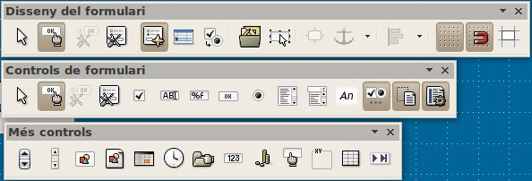
Abans d'analitzar els controls per separat, caldria deixar clara la diferencia entre el «document formulari», els elements «formulari», els elements «control» i la «pàgina» o pantalla on s'ubiquen els controls.
El «document formulari» és el que estem creant, el resultat global, el conjunt d'elements que configuraran una forma de visualitzar i escriure dades a les taules. El document formulari, estarà format pels elements formulari, pels controls i la pàgina de fons del document.
Cal que tinguem en compte que els elements «formulari» no tenen una representació gràfica, més aviat cal entendre'ls com el vincle entre las dades i els controls. Cada element formulari es troba associat a una taula de la base de dades i tots els controls continguts en una formulari faran referencia a la taula associada.
La representació gràfica dels formularis se sustenta d'una banda, sobre els controls, que són elements gràfics que informen al usuari i li permeten la introducció d'informació. De l'altra, se sustenta també sobre la pàgina de treball on s'ubicaran els controls que actuarà de fons. Ja s'ha comentat que l'editor de formularis és el writter el qual treballarà sobre un document de text amb una única pàgina.
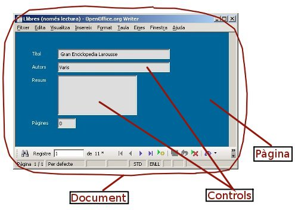
Podeu observar el contingut dels formularis si obriu una finestra anomenada navegador de formularis que permet visualitzar i seleccionar els diferents elements constituents d'un document formulari. Vegeu-ne dos exemples:
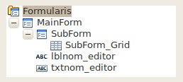
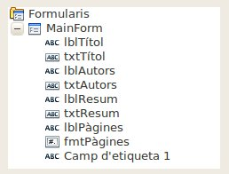
En el navegador, el «document formulari» estaria representat per l'arrel (Formularis). Aquest conté un o més formularis (elements) i cada formulari contindrà controls o d'altres formularis (subformularis).
Per obrir la finestra del navegador de formularis, cal que cliqueu el cinquè botó de la barra Disseny de formulari tal com s'indica a la figura:
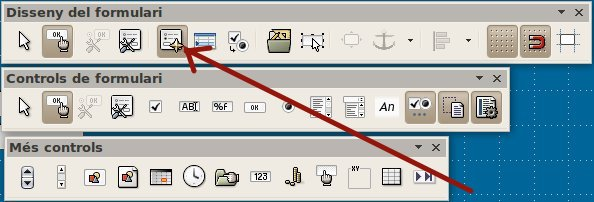
El formularis poden configurar-se canviant alguna de les seves propietats. Podem obrir un quadre de diàleg amb les propietats del formulari, clicant el quart botó de la les barres Disseny de formulari o be Control de formulari
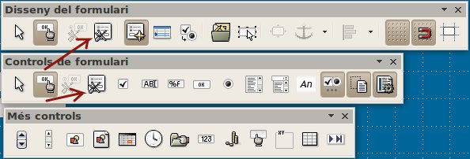
Les propietats que més ens interessen en aquest moment es troben a la pestanya dades. Allà podrem escollir o canviar la taula de dades associada al formulari. De moment, l'Open Base només permet associar una sola taula a un element formulari. De manera que si necessitéssim treballar amb més taules caldrà afegir nous formularis. Ho veurem més endavant.
Malgrat que els formularis es poden associar a consultes, aquesta no sol ser una bona decisió ja que quan associem un formulari a una consulta, aquest no pot afegir ni modificar dades a les taules. Per tant deixarem les consultes pels informes.
Des de la pestanya dades, també podrem definir un ordre determinat de visualització o un filtre específic.
Per configurar la pagina del document, disposem del menú Format opció Pàgina. Podrem canviar la mida, els marges, el color de fons, les vores, etc.
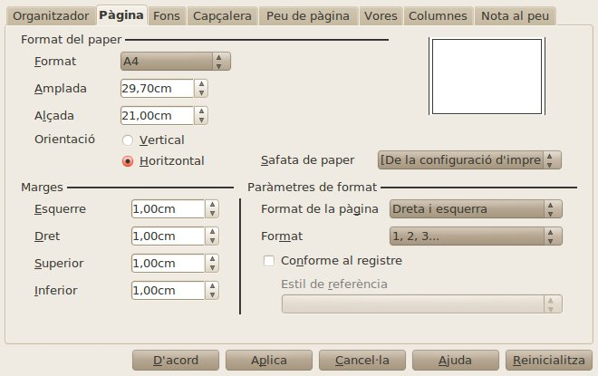
Moltes de les propietats dels controls són especifiques da cada tipus. Tot hi això hi ha propietats comunes compartides per tots ells. Per exemple, en tractar-se d'elements gràfics, estan situats en alguna posició de la pàgina i per tant necessiten coordenades. Malgrat tot, l'ancoratge, seguint la filosofia del libreOffice writer, pot associar-se a la pròpia pàgina (coordenades absolutes), a un paràgraf o fins i tot a la posició d'a un caràcter especific (coordenades relatives).
Si fem doble clic damunt d'un control, se'ns obrirà la finestra de les propietats. Cal anar alerta perquè si el control s'ha generat de forma automàtica amb l'auxiliar de formularis, els quadres de text i les etiquetes es trobaran agrupats. Per obtenir les propietat de cada control per separat caldrà desagrupar-los (botó dret i en el menú de context sitaur-se sobre Agrupa i seleccionar Desagrupa). Un cop desagrupats seleccionau el control que desitgeu i en fer doble clic se us obrirà el quadre de diàleg de les propietats.
El quadre disposa de 3 pestanyes: General, Dades i Esdeveniments. La primera agrupa aquelles propietats referides a la part gràfica (coordenades, color, tipus de lletra, etc.), la pestanya Dades, conté la configuració referida a la dada vinculada al control. Malgrat hi ha controls com les etiquetes, que no es troben vinculades a cap dada de la base de dades, la majoria d'ells si que tenen vinculació. Concretament els controls continguts a un element formulari, només poden estar vinculats a un camp de la taula associada al formulari. Podreu canviar el vincle modificant la propietat anomenada camp de dades.
No tenim prou temps per estudiar tots els controls a fons, per això escollirem només els més usuals. A banda de les etiquetes i els quadres de text que ja hem vist, destacarem el quadre de llista i el quadre combinat. Són controls molt semblants amb molt poques diferencies que comentarem més endavant. Es tracta d'uns controls molt importants perquè permeten definir una llista de possibles valors del control i de retruc de la dada associada.
Solen fer-se servir de selectors de claus forànies per evitar errors i assegurar l'existència de la clau. Podem afegir un d'aquests controls clicant el botó desè o onzè.
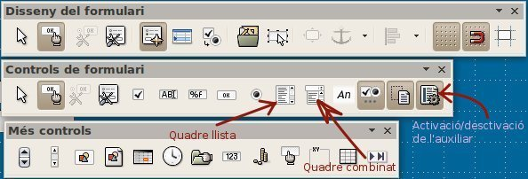
Per facilitar la configuració d'aquest controls, podem activar l'aparició d'un auxiliar de configuració, cada vegada que afegim un control d'aquest tipus, activant el darrer botó de controls de formulari ("auxiliars habilitats/inhabilitats"). Deixeu-lo habilitat.
Si voléssim crear un selector de països en una formulari per editar llibres de la base de dades "biblioteca", clicaríem el botó quadre combinat i delimitaríem l'àrea que hauria d'ocupar. Immediatament s'obrirà un quadre de diàleg preguntat per la font de dades d'on treure el conjunt de valors candidats. Escollirem la taula Pais i clicarem següent:
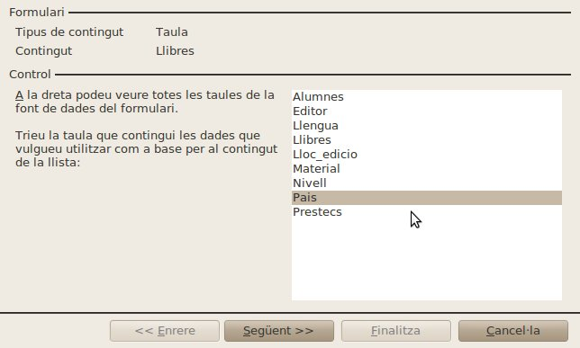
Ara ens preguntarà pel camp d'on treure els valors candidats. Escollirem codi_pais en el nostre cas i clicarem següent.
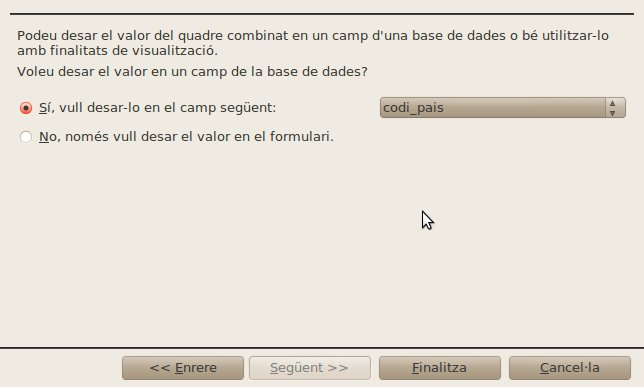
La darrera pantalla permet associar el valor escollir a un camp de la taula del formulari. En el nostre cas serà el camp codi_pais de la taula intervencions.
El control quadre llista permet visualitzar-se com una llista, visualitzant tots els seus elements o ve com un desplegable, emulant el quadre combinat (propietat Desplegable). Però potser el que més útil el fa és que permet definir dos col·leccions de valors, els valors que es visualitzaran al desplegable o llista i els valors que caldrà emmagatzemar a la taula vinculada. Això permet fer més amable la introducció de dades. Per exemple, haver d'escollir un alumne per el seu codi numèric quan omplim un formulari de préstecs, pot resultat complex d'omplir, ja que implicaria conèixer de memòria el codi dels alumne o haver de consultar contínuament la taula d'alumnes.
El quadre de llista pretén mostrar una llista amb el nom dels alumnes però en realitat emmagatzemar el codi de l'alumne a la taula de prestes. Per fer-ho, en obris-se l'auxiliar, cal seleccionar el camp a visualitzar com a llista (per exemple els cognoms de l'alumne):
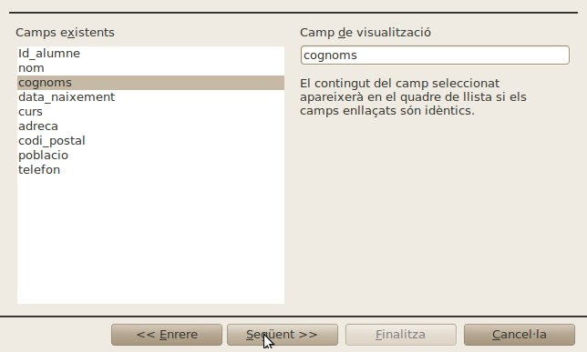
I seguidament indicar la correspondència entre la clau principal i la clau forània. o el que és el mateix el valor real a emmagatzemar a la taula vinculada. EN el nostre cas el codi de l'alumne:
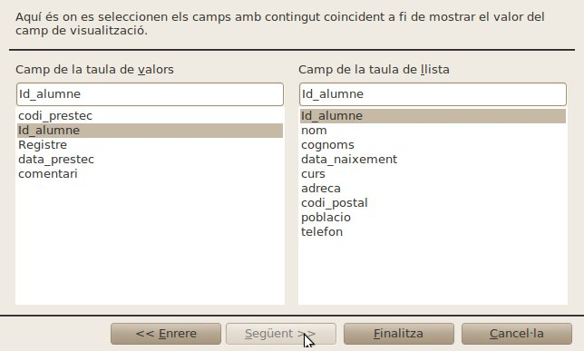
Podem observar la repercussió que això té a les propietats. El camp lligat indica que del dos camps seleccionats (cognoms i id) el que es troba a la posició 1 serà e que es guardarà. Cal dir que OpenBase sempre comença a comptar per valor zero. Per tant la posició 1 es correspondrà amb el segon camp (l'id).
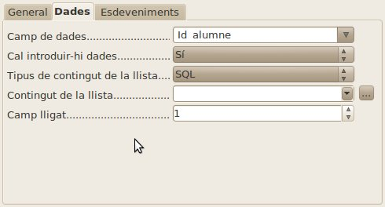
Uns altres controls a destacar, són els que permeten manipular dates i hores. Per afegir aquest parell de controls caldrà obrir una barra d'eines de controls extres. Per fer-ho caldrà activar la barra clicant l'antepenúltim botó de la barra "Control formulari".
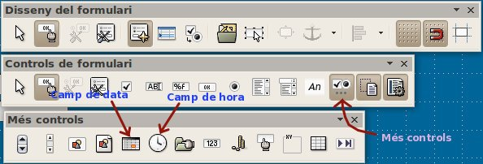
El control per formatar dates, permet desplegar un calendari per seleccionar la data posant a "si", la propietat anomenada "Desplegable", permet també disposar d'un incrementador de valor activant la propietat "Botó de selecció de valors". A més permet també definir el format de la data, així com un valor màxim i un mínim.
Altres controls que també convé tenir en compte són:
També comentarem que internament els formularis mantenen un ordre determinat d'introducció de dades que es plasma quan l'usuari va prement la tecla tabulació. L'ordre per defecte coincideix amb l'ordre en que han estat creats. Però sovint aquest ordre sol ser caòtic i no desitjat. Existeix la possibilitat de reordenar ordre dels controls clicant el botó Ordre d'activació a la barra Disseny de formulari.
Com ja s'ha comentat cada element formulari només es capaç de gestionar una única taula de la base de dades. Què passa si necessitem treballar amb diferents taules dins un mateix document?. La resposta ja l'hem avançat amb anterioritat, cal afegir múltiples formularis.
Cada nou formulari afegit pot dependre directament del document (parlarem aleshores de formularis independents), o be pot dependre d'un altre formulari (parlarem a leshores de subformularis), els quals estaran lligats al formulari pare per mitjà d'un camp que actuarà com a clau forània i clau primaria, de manera que si el formulari principal pren el valor X en el camp que faci d'enllaç, el subformulari visualitzarà el registre o registres coincidents amb el valor X en el camp designat com a vinculat amb el formulari pare.
Per afegir nous formularis caldrà obrir la finestra de navegació de formularis, clicar el botó dret sobre l'arrel (formularis) o sobre el formulari que haurà de ser pare, activem la opció nou... i escollim Formulari.
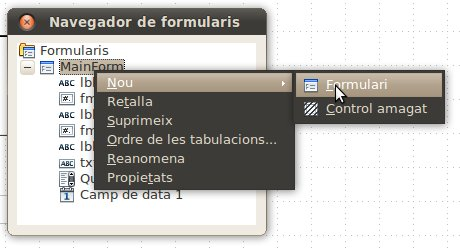
Un cop creat el formulari, caldrà posar-li el nom que desitgem i a continuació clicant el botó dret, escollir la opció propietats. Això ens obrirà les propietats del nou formulari. A la pestanya dades podrem escollir:
Quan disposem de diversos formularis, els controls afegits pertanyeran al formulari que en el moment d'afegir es trobi seleccionat a la finestra de navegació de formularis. Malgrat tot, si ens equivoquem, podem re-assignar els controls arrossegant-los en la pròpia finestra de navegació de formularis d'un formulari a un altre.

|
|

|
|